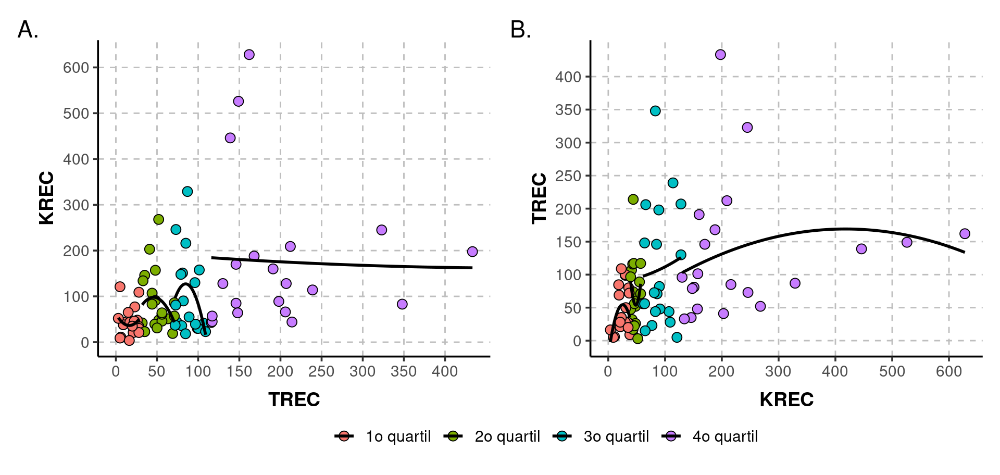
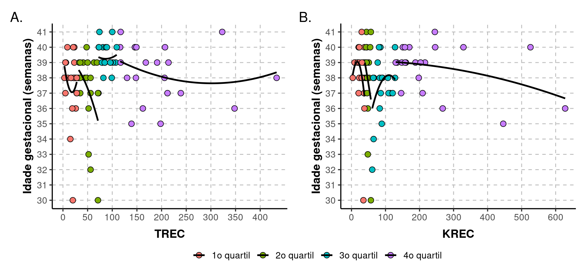
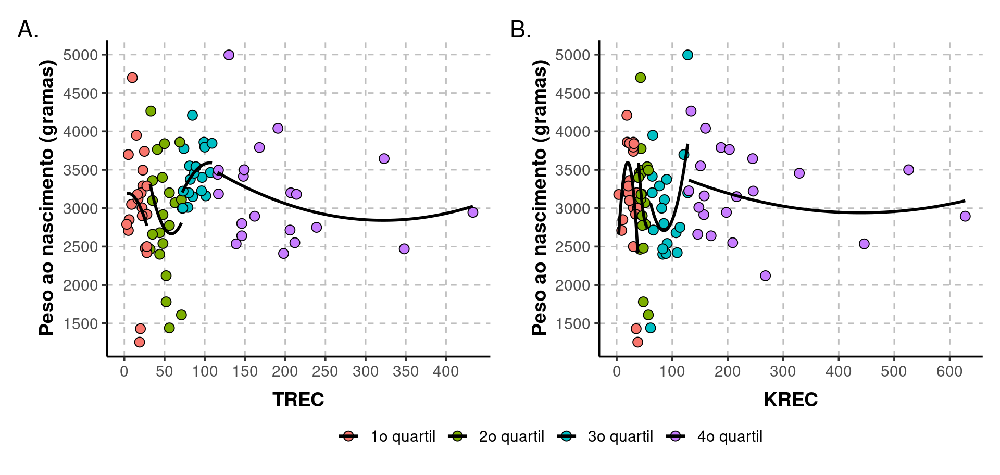
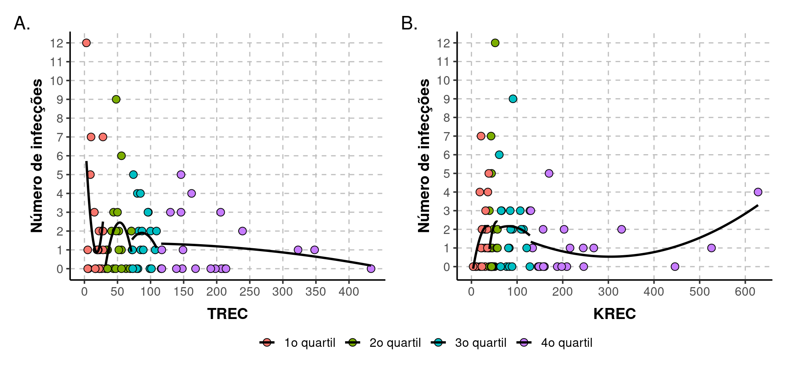
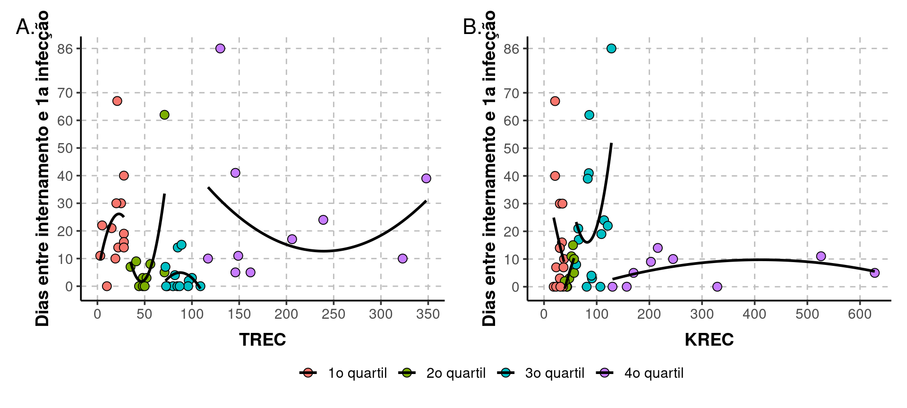
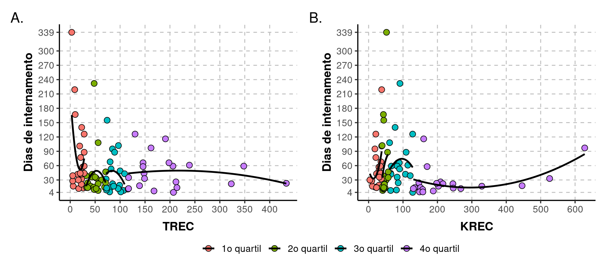
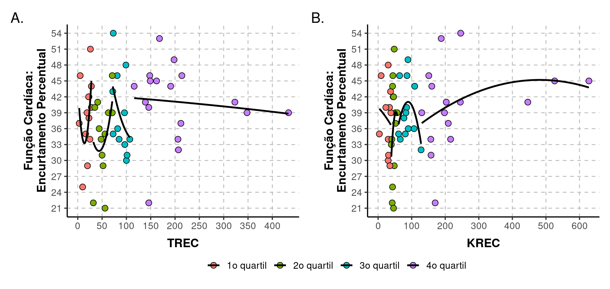
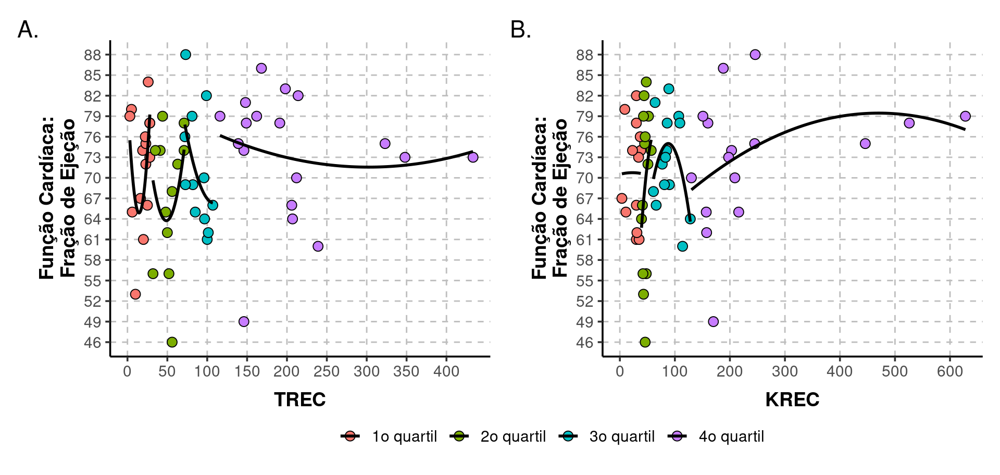

Deleção 22q: TREC & KREC por quartis
Bianca Pitanga, Carolina Prando e Henrique Laureano
Last modification on 2022-09-06 16:09:34
TREC & KREC

| Correlação | Limite.inferior | Limite.superior | Estatística | valor.p | |
|---|---|---|---|---|---|
| TREC | |||||
| 1o quartil | -0.011 | -0.431 | 0.412 | -0.050 | 0.961 |
| 2o quartil | -0.178 | -0.566 | 0.275 | -0.787 | 0.441 |
| 3o quartil | -0.241 | -0.626 | 0.240 | -1.022 | 0.321 |
| 4o quartil | -0.038 | -0.462 | 0.400 | -0.166 | 0.870 |
| KREC | |||||
| 1o quartil | 0.188 | -0.254 | 0.565 | 0.856 | 0.402 |
| 2o quartil | -0.006 | -0.447 | 0.438 | -0.025 | 0.981 |
| 3o quartil | 0.099 | -0.359 | 0.519 | 0.424 | 0.676 |
| 4o quartil | 0.137 | -0.314 | 0.537 | 0.601 | 0.555 |
Dependendo da variável que utilizamos para criar os grupos (quartis) vemos como as correlações diferem. Contudo, nenhuma é estatisticamente significativa (valor-p < 0.05).
Idade gestacional

Sem diferenças estatisticamente significativas, mas bem próximo para o 2o quartil de TREC.
| Correlação | Limite.inferior | Limite.superior | Estatística | valor.p | |
|---|---|---|---|---|---|
| TREC | |||||
| 1o quartil | -0.127 | -0.521 | 0.311 | -0.575 | 0.572 |
| 2o quartil | -0.405 | -0.712 | 0.032 | -1.932 | 0.068 |
| 3o quartil | 0.036 | -0.425 | 0.483 | 0.150 | 0.882 |
| 4o quartil | -0.169 | -0.560 | 0.284 | -0.746 | 0.465 |
| KREC | |||||
| 1o quartil | -0.267 | -0.619 | 0.174 | -1.239 | 0.230 |
| 2o quartil | -0.282 | -0.644 | 0.184 | -1.246 | 0.229 |
| 3o quartil | 0.309 | -0.155 | 0.661 | 1.377 | 0.186 |
| 4o quartil | -0.378 | -0.696 | 0.064 | -1.781 | 0.091 |
Peso ao nascimento

De quartil pra quartil as correlações mudam bastante, mas nenhuma se mostra estatisticamente significante.
| Correlação | Limite.inferior | Limite.superior | Estatística | valor.p | |
|---|---|---|---|---|---|
| TREC | |||||
| 1o quartil | -0.197 | -0.571 | 0.244 | -0.901 | 0.378 |
| 2o quartil | -0.216 | -0.592 | 0.238 | -0.964 | 0.347 |
| 3o quartil | 0.387 | -0.082 | 0.715 | 1.730 | 0.102 |
| 4o quartil | -0.252 | -0.617 | 0.201 | -1.136 | 0.270 |
| KREC | |||||
| 1o quartil | -0.267 | -0.619 | 0.175 | -1.237 | 0.230 |
| 2o quartil | -0.358 | -0.691 | 0.100 | -1.627 | 0.121 |
| 3o quartil | 0.333 | -0.128 | 0.676 | 1.499 | 0.151 |
| 4o quartil | -0.187 | -0.572 | 0.267 | -0.828 | 0.418 |
Presença de infecções
| 0 | 1 | n | perc | |
|---|---|---|---|---|
| TREC | ||||
| 1o quartil | 7 | 15 | 22 | 0.682 |
| 2o quartil | 8 | 13 | 21 | 0.619 |
| 3o quartil | 5 | 14 | 19 | 0.737 |
| 4o quartil | 11 | 10 | 21 | 0.476 |
| KREC | ||||
| 1o quartil | 6 | 16 | 22 | 0.727 |
| 2o quartil | 9 | 11 | 20 | 0.550 |
| 3o quartil | 6 | 14 | 20 | 0.700 |
| 4o quartil | 10 | 11 | 21 | 0.524 |
Quando comparamos os quartis de TREC/KREC por percentuais de pacientes com infecções, vemos que nenhum quartil difere estatisticamente.
Independente do quartil de TREC/KREC, não temos evidências de que a proporção de pacientes com infecções mude.
| var1 | var2 | var1.percentual | var2.percentual | Estatística | valor.p |
|---|---|---|---|---|---|
| TREC | |||||
| 1o quartil | 2o quartil | 0.682 | 0.619 | 0.012 | 0.911 |
| 1o quartil | 3o quartil | 0.682 | 0.737 | 0.002 | 0.967 |
| 1o quartil | 4o quartil | 0.682 | 0.476 | 1.117 | 0.290 |
| 2o quartil | 3o quartil | 0.619 | 0.737 | 0.208 | 0.648 |
| 2o quartil | 4o quartil | 0.619 | 0.476 | 0.384 | 0.535 |
| 3o quartil | 4o quartil | 0.737 | 0.476 | 1.842 | 0.175 |
| KREC | |||||
| 1o quartil | 2o quartil | 0.727 | 0.550 | 0.766 | 0.382 |
| 1o quartil | 3o quartil | 0.727 | 0.700 | 0.000 | 1.000 |
| 1o quartil | 4o quartil | 0.727 | 0.524 | 1.132 | 0.287 |
| 2o quartil | 3o quartil | 0.550 | 0.700 | 0.427 | 0.514 |
| 2o quartil | 4o quartil | 0.550 | 0.524 | 0.000 | 1.000 |
| 3o quartil | 4o quartil | 0.700 | 0.524 | 0.699 | 0.403 |

Nenhuma correlação estatisticamente significativa.
| Correlação | Limite.inferior | Limite.superior | Estatística | valor.p | |
|---|---|---|---|---|---|
| TREC | |||||
| 1o quartil | -0.296 | -0.638 | 0.144 | -1.385 | 0.181 |
| 2o quartil | 0.112 | -0.336 | 0.519 | 0.492 | 0.628 |
| 3o quartil | -0.066 | -0.505 | 0.401 | -0.271 | 0.790 |
| 4o quartil | -0.178 | -0.566 | 0.275 | -0.788 | 0.441 |
| KREC | |||||
| 1o quartil | 0.302 | -0.137 | 0.642 | 1.415 | 0.172 |
| 2o quartil | 0.142 | -0.320 | 0.550 | 0.610 | 0.550 |
| 3o quartil | -0.057 | -0.487 | 0.396 | -0.241 | 0.812 |
| 4o quartil | 0.252 | -0.202 | 0.616 | 1.133 | 0.271 |
Tempo
Entre internamento e primeira infecção
Warning: Removed 37 rows containing non-finite values (stat_smooth).Warning: Removed 37 rows containing missing values (geom_point).
Correlação positiva, forte e significativa apenas para o segundo quartil de KREC.
| Correlação | Limite.inferior | Limite.superior | Estatística | valor.p | |
|---|---|---|---|---|---|
| TREC | |||||
| 1o quartil | 0.286 | -0.314 | 0.723 | 0.990 | 0.343 |
| 2o quartil | 0.563 | -0.103 | 0.881 | 1.927 | 0.090 |
| 3o quartil | -0.075 | -0.601 | 0.496 | -0.250 | 0.807 |
| 4o quartil | -0.065 | -0.667 | 0.589 | -0.184 | 0.858 |
| KREC | |||||
| 1o quartil | -0.277 | -0.691 | 0.275 | -1.038 | 0.318 |
| 2o quartil | 0.752 | 0.101 | 0.952 | 2.795 | 0.031 |
| 3o quartil | 0.340 | -0.233 | 0.737 | 1.251 | 0.235 |
| 4o quartil | 0.196 | -0.538 | 0.761 | 0.530 | 0.612 |
De internamento

Correlações não significativas.
| Correlação | Limite.inferior | Limite.superior | Estatística | valor.p | |
|---|---|---|---|---|---|
| TREC | |||||
| 1o quartil | -0.339 | -0.665 | 0.097 | -1.609 | 0.123 |
| 2o quartil | 0.055 | -0.386 | 0.475 | 0.239 | 0.814 |
| 3o quartil | -0.143 | -0.561 | 0.333 | -0.596 | 0.559 |
| 4o quartil | -0.109 | -0.516 | 0.339 | -0.476 | 0.640 |
| KREC | |||||
| 1o quartil | 0.351 | -0.083 | 0.673 | 1.675 | 0.110 |
| 2o quartil | 0.181 | -0.284 | 0.577 | 0.781 | 0.445 |
| 3o quartil | 0.034 | -0.415 | 0.469 | 0.144 | 0.887 |
| 4o quartil | 0.355 | -0.091 | 0.682 | 1.653 | 0.115 |
Linfopenia
| N | S | n | perc | |
|---|---|---|---|---|
| TREC | ||||
| 1o quartil | 7 | 15 | 22 | 0.682 |
| 2o quartil | 10 | 11 | 21 | 0.524 |
| 3o quartil | 12 | 7 | 19 | 0.368 |
| 4o quartil | 10 | 11 | 21 | 0.524 |
| KREC | ||||
| 1o quartil | 5 | 17 | 22 | 0.773 |
| 2o quartil | 10 | 10 | 20 | 0.500 |
| 3o quartil | 8 | 12 | 20 | 0.600 |
| 4o quartil | 16 | 5 | 21 | 0.238 |
Nenhuma diferença é estatisticamente significativa para o TREC.
No KREC, em termos das proporções de pacientes com linfopenia quando estratificamos o KREC por quartis, verificamos diferença estatisticamente significativa entre os quartis 1 e 4 e entre os quartis 3 e 4.
| var1 | var2 | var1.percentual | var2.percentual | Estatística | valor.p |
|---|---|---|---|---|---|
| TREC | |||||
| 1o quartil | 2o quartil | 0.682 | 0.524 | 0.558 | 0.455 |
| 1o quartil | 3o quartil | 0.682 | 0.368 | 2.865 | 0.091 |
| 1o quartil | 4o quartil | 0.682 | 0.524 | 0.558 | 0.455 |
| 2o quartil | 3o quartil | 0.524 | 0.368 | 0.447 | 0.504 |
| 2o quartil | 4o quartil | 0.524 | 0.524 | 0.000 | 1.000 |
| 3o quartil | 4o quartil | 0.368 | 0.524 | 0.447 | 0.504 |
| KREC | |||||
| 1o quartil | 2o quartil | 0.773 | 0.500 | 2.310 | 0.129 |
| 1o quartil | 3o quartil | 0.773 | 0.600 | 0.766 | 0.381 |
| 1o quartil | 4o quartil | 0.773 | 0.238 | 10.244 | 0.001 |
| 2o quartil | 3o quartil | 0.500 | 0.600 | 0.101 | 0.751 |
| 2o quartil | 4o quartil | 0.500 | 0.238 | 2.005 | 0.157 |
| 3o quartil | 4o quartil | 0.600 | 0.238 | 4.137 | 0.042 |
Desfecho (óbito)
| Alta | Obito | n | perc | |
|---|---|---|---|---|
| TREC | ||||
| 1o quartil | 14 | 7 | 21 | 0.333 |
| 2o quartil | 17 | 4 | 21 | 0.190 |
| 3o quartil | 15 | 4 | 19 | 0.211 |
| 4o quartil | 16 | 5 | 21 | 0.238 |
| KREC | ||||
| 1o quartil | 14 | 8 | 22 | 0.364 |
| 2o quartil | 16 | 3 | 19 | 0.158 |
| 3o quartil | 13 | 7 | 20 | 0.350 |
| 4o quartil | 19 | 2 | 21 | 0.095 |
Nenhuma diferença é estatisticamente significativa.
| var1 | var2 | var1.percentual | var2.percentual | Estatística | valor.p |
|---|---|---|---|---|---|
| TREC | |||||
| 1o quartil | 2o quartil | 0.333 | 0.190 | 0.493 | 0.483 |
| 1o quartil | 3o quartil | 0.333 | 0.211 | 0.264 | 0.607 |
| 1o quartil | 4o quartil | 0.333 | 0.238 | 0.117 | 0.733 |
| 2o quartil | 3o quartil | 0.190 | 0.211 | 0.000 | 1.000 |
| 2o quartil | 4o quartil | 0.190 | 0.238 | 0.000 | 1.000 |
| 3o quartil | 4o quartil | 0.211 | 0.238 | 0.000 | 1.000 |
| KREC | |||||
| 1o quartil | 2o quartil | 0.364 | 0.158 | 1.275 | 0.259 |
| 1o quartil | 3o quartil | 0.364 | 0.350 | 0.000 | 1.000 |
| 1o quartil | 4o quartil | 0.364 | 0.095 | 2.963 | 0.085 |
| 2o quartil | 3o quartil | 0.158 | 0.350 | 1.013 | 0.314 |
| 2o quartil | 4o quartil | 0.158 | 0.095 | 0.014 | 0.905 |
| 3o quartil | 4o quartil | 0.350 | 0.095 | 2.536 | 0.111 |
Tipo de cardiopatia
| 0 | 1 | n | perc | |
|---|---|---|---|---|
| TREC | ||||
| 1o quartil | 18 | 4 | 22 | 0.182 |
| 2o quartil | 18 | 3 | 21 | 0.143 |
| 3o quartil | 15 | 4 | 19 | 0.211 |
| 4o quartil | 20 | 1 | 21 | 0.048 |
| KREC | ||||
| 1o quartil | 16 | 6 | 22 | 0.273 |
| 2o quartil | 17 | 3 | 20 | 0.150 |
| 3o quartil | 17 | 3 | 20 | 0.150 |
| 4o quartil | 21 | 0 | 21 | 0.000 |
Em termos de frequência de SHVE, a única diferença estatisticamente significativa é entre os quartis 1 e 4 do KREC.
| var1 | var2 | var1.percentual | var2.percentual | Estatística | valor.p |
|---|---|---|---|---|---|
| TREC | |||||
| 1o quartil | 2o quartil | 0.182 | 0.143 | 0.000 | 1.000 |
| 1o quartil | 3o quartil | 0.182 | 0.211 | 0.000 | 1.000 |
| 1o quartil | 4o quartil | 0.182 | 0.048 | 0.803 | 0.370 |
| 2o quartil | 3o quartil | 0.143 | 0.211 | 0.021 | 0.884 |
| 2o quartil | 4o quartil | 0.143 | 0.048 | 0.276 | 0.599 |
| 3o quartil | 4o quartil | 0.211 | 0.048 | 1.160 | 0.281 |
| KREC | |||||
| 1o quartil | 2o quartil | 0.273 | 0.150 | 0.350 | 0.554 |
| 1o quartil | 3o quartil | 0.273 | 0.150 | 0.350 | 0.554 |
| 1o quartil | 4o quartil | 0.273 | 0.000 | 4.578 | 0.032 |
| 2o quartil | 3o quartil | 0.150 | 0.150 | 0.000 | 1.000 |
| 2o quartil | 4o quartil | 0.150 | 0.000 | 1.547 | 0.214 |
| 3o quartil | 4o quartil | 0.150 | 0.000 | 1.547 | 0.214 |
Função cardíaca (FC)
Encurtamento percentual (EP)

Nenhuma correlação estatisticamente significativa.
| Correlação | Limite.inferior | Limite.superior | Estatística | valor.p | |
|---|---|---|---|---|---|
| TREC | |||||
| 1o quartil | 0.270 | -0.330 | 0.715 | 0.932 | 0.371 |
| 2o quartil | 0.363 | -0.266 | 0.776 | 1.234 | 0.246 |
| 3o quartil | -0.481 | -0.827 | 0.128 | -1.735 | 0.113 |
| 4o quartil | -0.109 | -0.560 | 0.393 | -0.423 | 0.678 |
| KREC | |||||
| 1o quartil | -0.155 | -0.690 | 0.491 | -0.470 | 0.650 |
| 2o quartil | 0.244 | -0.329 | 0.686 | 0.873 | 0.400 |
| 3o quartil | -0.123 | -0.631 | 0.459 | -0.411 | 0.689 |
| 4o quartil | 0.279 | -0.252 | 0.681 | 1.087 | 0.296 |
Fração de ejeção (FE)

Nenhuma correlação é estatisticamente significativa.
| Correlação | Limite.inferior | Limite.superior | Estatística | valor.p | |
|---|---|---|---|---|---|
| TREC | |||||
| 1o quartil | 0.228 | -0.322 | 0.663 | 0.843 | 0.414 |
| 2o quartil | 0.185 | -0.436 | 0.686 | 0.594 | 0.566 |
| 3o quartil | -0.518 | -0.842 | 0.079 | -1.917 | 0.084 |
| 4o quartil | -0.088 | -0.533 | 0.395 | -0.352 | 0.730 |
| KREC | |||||
| 1o quartil | 0.002 | -0.549 | 0.553 | 0.008 | 0.994 |
| 2o quartil | 0.296 | -0.279 | 0.714 | 1.072 | 0.305 |
| 3o quartil | -0.200 | -0.660 | 0.370 | -0.706 | 0.494 |
| 4o quartil | 0.309 | -0.221 | 0.698 | 1.215 | 0.244 |
Extra
Ajustamos modelos lineares de regressão tentando associar várias características ao TREC e KREC. Desconsideramos as variáveis
FC.EP,FC.FEeDias.1a.Infecção, devido a presença de dados faltantes nas mesmas.Simplificamos a variável DESFECHO, considerando apenas óbito (20, 24.1%) ou não; e criamos a variável SHVE - com 12 (14.46%) tendo.
Testamos o efeito de seis características:
- Idade gestacional (categorizada por quartis);
- Peso ao nascimento (categorizada por quartis);
- Número de infecções (categorizada por quartis);
- Dias de internamento (categorizada por quartis);
- Desfecho (óbito, sim ou não);
- Cardiopatia SHVE (sim ou não).
Não obtivemos ajustes de qualidade modelando TREC/KREC em sua escala natural. Contudo, aplicando a transformação logaritmica (logaritmo natural / base exponencial) fomos capazes de obter ajustes de qualidade, com base numa análise gráfica de resíduos.
Performamos seleção de variáveis a partir dum processo stepwise com base no AIC, Critério de Informação de Akaike (Sakamoto, Ishiguro, and Kitagawa 1986; Venables and Ripley 2002).
Na Table 17 temos um resumo dos resultados. Dentre as seis variáveis testadas, nenhuma foi significativa para o TREC. Ou seja, na tabela temos apenas resultados para o KREC. Apenas o idade gestacional e a cardiopatia SHVE foram significativos para o KREC.
Com base nas variáveis se estima um valor médio de KREC de 91.84 com intervalo de confiança (IC) de 95% variando de 62.18 até 134.29. Esse valor médio é para pacientes no 1o quartil da idade gestacional e sem SHVE. Mudando para o 2o quartil da idade gestacional o TREC médio muda 53.89; Mudando para o 3o quartil o TREC médio muda para 60.95; e para o último quartil, 90.99. Os valores-p reportados indicam se esssas mudanças em relação ao 1o quartil são ou não estatisticamente significativas. Por fim, se o paciente tem SHVE seu TREC médio muda para 55.04 (IC: 21.33, 140.3).
| Estimativa | Limite.inferior | Limite.superior | Estatística | valor.p | |
|---|---|---|---|---|---|
| Idade gestacional: 1o quartil & sem SHVE | 91.836 | 62.178 | 134.290 | 23.200 | - |
| Idade gestacional: 2o quartil | 53.893 | 21.392 | 134.424 | -1.960 | 0.0538 |
| Idade gestacional: 3o quartil | 60.947 | 24.167 | 152.323 | -1.500 | 0.1378 |
| Idade gestacional: 4o quartil | 90.995 | 35.588 | 230.442 | -0.033 | 0.9739 |
| Com SHVE | 55.037 | 21.328 | 140.302 | -1.830 | 0.0705 |
A partir da tabela acima somos capazes de obter todas as comparações entre quartis da idade gestacional. Contudo, o modelo não nos retorna os valores-p dessas extra comparações. Para tal é necessário uma etapa extra de processamento. Segue abaixo os valores-p:
| Comparação | valor.p |
|---|---|
| 3o quartil - 2o quartil | 0.648 |
| 4o quartil - 2o quartil | 0.060 |
| 4o quartil - 3o quartil | 0.153 |
Referências
A análise estatística foi performada através da linguagem e ambiente para computação estatística R (R Core Team 2022). Os principais pacotes R utilizados foram os seguintes: {dplyr} (Wickham et al. 2022), {tidyr} (Wickham and Girlich 2022), {stringr} (Wickham 2019), {ggplot2} (Wickham 2016), {patchwork} (Pedersen 2020), {purrr} (Henry and Wickham 2020), {marginaleffects} (Arel-Bundock 2022) e {MASS} (Venables and Ripley 2002).
Além da obtenção das medidas descritivas e gráficos explorando as relações entre as variáveis, Foram testadas correlações (Becker, Chambers, and Wilks 1988); médias foram comparadas via Welch Test-t de Student (Arel-Bundock 2022); proporções foram testadas (Wilson 1927; Newcombe 1998b, 1998a); e modelos lineares de regressão (Chambers 1992; Venables and Ripley 2002) foram também ajustados para testar e quantificar associações.